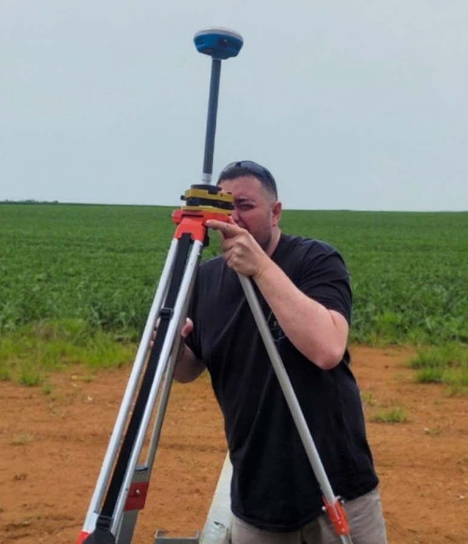

Proibido de vender ou transferir
Sem geo aprovado no INCRA, o cartório não registra venda, doação, desmembramento ou herança. Sua terra fica presa legalmente.
CAD360 atende Bicas, São João Nepomuceno, Rio Novo e Mar de Espanha — regularização completa com Felipe Cremonese.
chatSolicitar Orçamento pelo WhatsAppMuitos proprietários só descobrem o problema quando precisam vender, financiar ou deixar a terra para os filhos. Nessa hora, um imóvel sem geo pode travar tudo — e o prejuízo é seu.
Sem geo aprovado no INCRA, o cartório não registra venda, doação, desmembramento ou herança. Sua terra fica presa legalmente.
Bancos e cooperativas exigem documentação regularizada para Pronaf, financiamento de safra e maquinário. Sem geo, sem crédito.
Limites imprecisos são a principal causa de conflitos entre propriedades. Um metro a mais ou a menos pode virar processo judicial de anos.
Para partilhar ou desmembrar a terra entre herdeiros, o georreferenciamento é obrigatório por lei. Sem ele, o inventário trava.
O INCRA determinou que todos os imóveis rurais precisarão ter o georreferenciamento aprovado no sistema SIGEF. Quem não regularizar ficará impedido de realizar qualquer ato registral — venda, desmembramento, partilha, doação.
Não espere a fila crescer. Com a aproximação do prazo, profissionais habilitados ficam sobrecarregados e os preços sobem. Quem age agora resolve com tranquilidade e paga menos.
Prazo final obrigatório do SIGEF
Cada mês de espera é um risco a mais para o seu patrimônio e para a sua capacidade de negociar a terra.
À medida que 2029 se aproxima, a fila de serviços cresce e o tempo de espera aumenta.
Com a procura em alta, os valores tendem a subir. Quem age hoje paga menos.
Compradores exigem documentação em dia. Imóvel irregular vende por menos — quando consegue vender.
Tem tranquilidade, documentação aprovada e pode vender, financiar ou transferir quando quiser.
A CAD360 não entrega apenas "pontos no mapa". Entregamos consistência técnica do campo ao processamento — e orientamos toda a documentação para que o processo não trave em nenhuma etapa.
Trabalhamos com os melhores equipamentos GPS profissional disponíveis no mercado. Precisão centimétrica que garante dados consistentes desde o campo até o processamento — sem rejeição no SIGEF.
Orientamos toda a documentação necessária antes, durante e após o serviço — evitando erros que atrasam ou inviabilizam o processo. Você não precisa correr atrás de nada sozinho.
O planejamento prévio das coletas reduz idas desnecessárias ao campo. Integração direta entre levantamento e produção técnica — sem perda de informação, sem inconsistências no processamento.
Com 13 anos de mercado e assessoria ativa para outros topógrafos, a CAD360 resolve casos complexos: sobreposições, divergências de matrícula e imóveis com histórico problemático.
Propriedade regularizada é mais valorizada e se vende mais rápido. Comprador paga mais por segurança jurídica — e exige geo antes de fechar qualquer negócio.
Os limites exatos da sua propriedade ficam registrados e aprovados pelo INCRA. Chega de discussão com vizinhos sobre onde começa e termina a sua terra.
Com o geo aprovado, você desbloqueia Pronaf, financiamento de safra, aquisição de maquinário e crédito fundiário — sem a documentação travando na burocracia.
Com a documentação em dia, a partilha é simples e sem conflito. O trabalho de uma vida inteira fica protegido e bem encaminhado para a próxima geração.
Levantamento consistente e metodologia padronizada garantem que o processo sai direto — sem devoluções, sem revisões, sem custo extra de retrabalho.
Processo transparente, sem surpresas e com acompanhamento em cada etapa.
Você entra em contato pelo WhatsApp. Avaliamos o imóvel e enviamos o orçamento sem compromisso.
Orientamos exatamente quais documentos reunir. Você entrega organizado e a gente cuida do restante.
Nossa equipe vai até o imóvel com equipamento GNSS profissional e realiza o levantamento com precisão centimétrica.
Você recebe o laudo técnico e acompanhamos a certificação no SIGEF até a aprovação final.
— o especialista que outros especialistas consultam
Especialista em Georreferenciamento · Fundador da CAD360
Felipe tem mais de 13 anos de atuação no mercado de topografia e georreferenciamento — e chegou a um nível que poucos profissionais atingem: outros topógrafos contratam a sua assessoria técnica para resolver casos que eles mesmos não conseguem executar.
Ao contratar a CAD360, você não contrata um serviço comum de mercado. Você contrata o profissional que resolve os problemas que os outros deixam para trás — com planejamento, equipamento de ponta e metodologia que garante aprovação no INCRA.

Nascemos da necessidade que o próprio mercado criou: topógrafos que precisavam de assessoria técnica qualificada. Hoje atendemos o cliente final com o mesmo padrão exigente que usamos para assessorar profissionais.
CAD360 inicia operações com foco em assessoria técnica para topógrafos e levantamentos de alta precisão em todo território nacional.
Adoção dos melhores equipamentos GNSS do mercado, garantindo precisão centimétrica e dados consistentes do campo ao escritório.
Felipe torna-se referência técnica em Bicas e no Vale do Paraibuna — consultado por outros topógrafos para resolver casos complexos que outros não conseguem.
A CAD360 passa a atender diretamente proprietários rurais, levando o mesmo padrão técnico ao produtor e ao homem do campo.
Anos de mercado
Raio de atendimento
Aprovação INCRA
Abrangência
Respostas diretas para você entender o que está em jogo e o que precisa ser feito.
É o processo de levantamento e registro das coordenadas exatas dos limites e área de um imóvel rural com GPS de alta precisão (GNSS). O resultado é certificado pelo INCRA no sistema SIGEF e vinculado à matrícula do imóvel. Sem ele, o imóvel não pode ser vendido, desmembrado, partilhado ou usado como garantia em financiamentos.
Sim. É obrigatório para qualquer transação registral: venda, doação, desmembramento, partilha de herança. E o prazo SIGEF de novembro de 2029 tornará a regularização obrigatória para todos os imóveis rurais, independentemente de transação.
O SIGEF (Sistema de Gestão Fundiária) é a plataforma oficial do INCRA para certificação de imóveis rurais georreferenciados. A aprovação no SIGEF é o que dá validade legal ao serviço. Na CAD360, acompanhamos todo o processo até a certificação final.
A diferença está na experiência, metodologia e equipamento. Com 13 anos de mercado e consultoria ativa para outros topógrafos, a CAD360 entrega dados consistentes que não geram rejeição no INCRA. Um trabalho mal feito pode ser rejeitado, gerando retrabalho e custo extra para o proprietário.
O prazo depende diretamente da completeza da documentação fornecida pelo cliente e da complexidade do imóvel. Quando o cliente entrega toda a documentação necessária de forma organizada, trabalhamos com um dos menores prazos do mercado. Entre em contato para saber o prazo estimado do seu imóvel especificamente.
Geralmente: matrícula atualizada do imóvel, CCIR, ITR dos últimos anos, documentos pessoais do proprietário e escritura. Cada imóvel tem suas particularidades — orientamos você sobre exatamente o que é necessário antes de começar.
Atendemos Bicas, São João Nepomuceno, Rio Novo, Mar de Espanha e toda a região do Vale do Paraibuna, com raio de até 300 km. Informe a localização do seu imóvel no contato.
Pelo WhatsApp. Informe o tamanho aproximado do imóvel, a localização e a situação atual da documentação. Respondemos com o valor e o prazo estimado. O orçamento é gratuito e sem compromisso.
Não deixe a documentação da sua terra para depois. Imóvel irregular não vende, não financia e não passa de herança sem complicação. Fale agora com Felipe — o especialista que outros especialistas consultam.
chatSolicitar Orçamento Agora